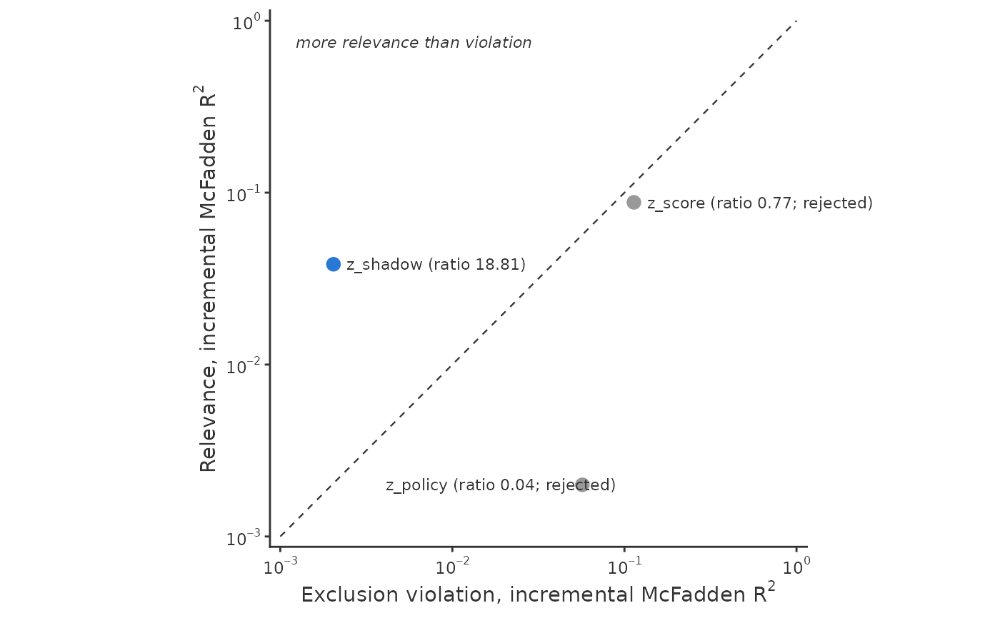

The ggplot2 version of plot.shadow_screen(): exclusion violation across,
relevance up, both incremental McFadden \(R^2\), on logarithmic axes by
default, with the equality line dashed and the panel square. Rejected
candidates are grey and labelled "rejected"; hollow points mark candidates
whose exclusion violation is at noise level (ratio_readable is FALSE),
whose label gives no ratio. Values of zero are drawn at the lower axis
limit. See plot.shadow_screen() for how to read the plot.
Usage
# S3 method for class 'shadow_screen'
autoplot(
object,
scale = c("log", "linear"),
label = NULL,
col = scan_colors[["sharp"]],
text_col = "grey20",
xlab = expression("Exclusion violation, incremental McFadden " * R^2),
ylab = expression("Relevance, incremental McFadden " * R^2),
main = NULL,
...
)Arguments
- object
A
"shadow_screen"object.- scale
"log"(default) or"linear"axes.- label
Candidates to label. Default: all if there are at most fifteen, else the most relevant one and the one with the highest ratio.
- col
Point colour.
- text_col
Colour for text and reference lines.
- xlab, ylab, main
Axis labels and title.
- ...
Not used.
Details
Labels go beside their point, away from the equality line, and are spread
vertically where they would overlap. The rules assume a plot of roughly
five by five inches; for crowded screens use label = character() and add
your own labels, for example with ggrepel::geom_text_repel(), from the
point layer's data (candidate, exclusion, relevance, label).
See also
plot.shadow_screen() for base graphics.
Examples
if (requireNamespace("ggplot2", quietly = TRUE)) {
d <- simulate_shadow(5000, tilt = -1, seed = 1)
sc <- shadow_screen(d, "y", "observed", c("x1", "x2"),
c("z_shadow", "z_policy", "z_score"))
ggplot2::autoplot(sc)
}
